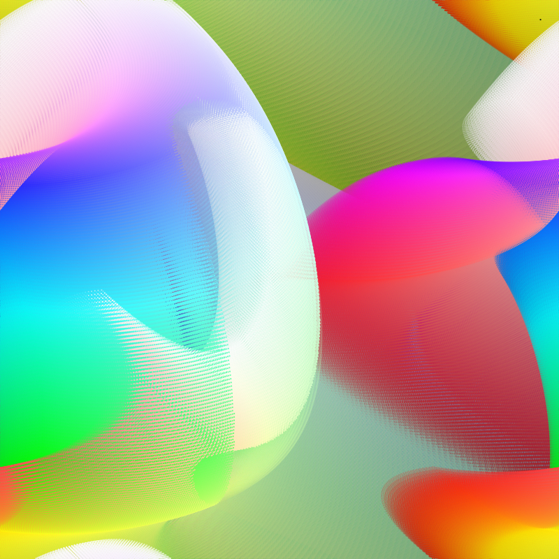
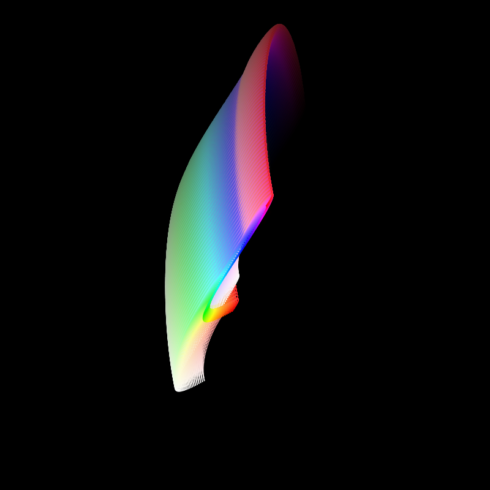

Genuary 01 - Triple Nested Loop
Loop through color values.
Pseudo-Code
For h ← 0 to X For s ← 0 to X For b ← 0 to X x,y,α ← fx(h,s,b); draw((x,y), (h,s,b,α)); end end end
Renders



Code (Processing.py 3.5.4)
# TRIPLE NESTED LOOP
from math import pi
# PARAMETERS
RES = 100
STEP = 2000
ITER = 10
CHAOS = 1
# /PARAMETERS
COUNT = 0
FX = None
def reset():
global COUNT, FX
background(0)
FX = rft()
COUNT = 0
def setup():
size(800, 800)
colorMode(HSB, RES)
reset()
def draw():
global COUNT
for _ in range(STEP):
if COUNT > RES**3:
return
h = COUNT % RES
s = (COUNT // RES) % RES
b = (COUNT // (RES*RES)) % RES
radius = max(sqrt(width * height / ((RES**3) * pi)), 1.0)
x,y,a = FX(h / float(RES), s / float(RES), b / float(RES))
x = (x % 1) * width
y = (y % 1) * height
a = (a % 1) * 255
noStroke()
fill(h,s,b,a)
circle(x,y, 2*radius)
COUNT += 1
print(h,s,b)
def pos(h,s,b):
return (h, s, b)
def cyl(h,s,b):
rho = sqrt(h*h + s*s)
phi = atan2(s, h)
return (rho, phi, b)
def sph(h,s,b):
rho = sqrt(h*h + s*s + b*b)
if rho == 0: return (0,0,0)
theta = acos(b / rho)
phi = atan2(s,h)
return (rho, theta, phi)
def rft():
xv = [[random(-CHAOS, CHAOS) for _ in range(9)] for _ in range(ITER)]
yv = [[random(-CHAOS, CHAOS) for _ in range(9)] for _ in range(ITER)]
zv = [[random(-CHAOS, CHAOS) for _ in range(9)] for _ in range(ITER)]
def fx(h,s,b):
x = 0
y = 0
z = 0
for hf, ha, hp, sf, sa, sp, ba, bf, bp in xv:
x += ha * sin(h * 2 * pi * hf + hp) / ITER
x += sa * sin(s * 2 * pi * sf + sp) / ITER
x += ba * sin(b * 2 * pi * bf + bp) / ITER
for hf, ha, hp, sf, sa, sp, ba, bf, bp in yv:
y += ha * sin(h * 2 * pi * hf + hp) / ITER
y += sa * sin(s * 2 * pi * sf + sp) / ITER
y += ba * sin(b * 2 * pi * bf + bp) / ITER
for hf, ha, hp, sf, sa, sp, ba, bf, bp in zv:
z += ha * sin(h * 2 * pi * hf + hp) / ITER
z += sa * sin(s * 2 * pi * sf + sp) / ITER
z += ba * sin(b * 2 * pi * bf + bp) / ITER
return (x + 0.5, y + 0.5, z + 0.5)
return fx
def keyPressed():
if key == " ":
reset()
if key == "s":
save("frame.png")by Kyntaz